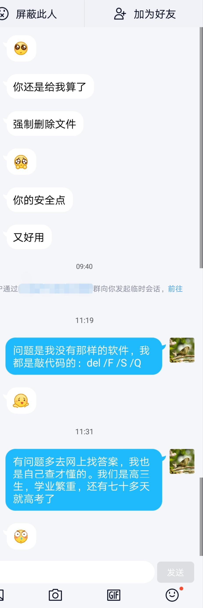

可能是我的善良太廉价，所以才不被珍惜？
好久没有写与学习无关的文章了，但还是忍不住要写一篇。这篇文章也会发布在我的博客上。
前些天有位群友找我帮忙，想从我这里拿一个能强制删除文件的软件。我没有这样的软件，但是之前做有笔记，我就把我记下来的命令代码发给他。令我感到意外的是，他从始至终没有和我说过一声“谢谢”。
后来我关闭了群内临时会话。

这虽然是一件很小的事情，但是类似的事情在我身上时常发生。我帮助过很多人，不管是学习方面还是技术方面，不管是线下还是线上。大部分人都懂得说“谢谢”，但就是有一部分人浪费我大把时间，事情搞好了就拍拍屁股走人，似乎是我欠他的。
当你去寻求朋友、同学或同事、老师或上级，甚至是陌生人的帮助时，是不是应该把“请”和“谢谢”常挂在嘴边呢？尽管别人可能由于各种原因没能帮上你的忙，但“谢谢”总要说一下吧？
但是就是有人不会说，或者说不出口。
曾经某些同学问了我一节晚自习的问题，然后点头就转身走了，一句“谢谢”也没说。我的一节晚自习就这样没了。
你的时间很宝贵，我的也一样。我把我的学习时间给了你，你是不是应该报答一下我？哪怕是一句“谢谢”？
以前我管座位的时候，我冒着风险和老师反馈某些同学的想法和意见。后来呢？他们不仅没说“谢谢”，还说这是应该的，甚至说我搞暗箱操作。
这是你自己的事，有特殊需求却不敢找班主任。我尽力帮忙了，却反被污蔑。我做事向来光明磊落，请别乱扣帽子。
还有的人多次找我解决一些技术问题，有时候搞得好，但有时候不行。问题解决了，连句“谢谢”都不说。
似乎我帮你解决技术问题是应该的？这些情况拿到外面去修通常要一百块以上，还会被坑。我免费给你解决了，你是不是应该说一下“谢谢”？
某些人，我帮过他很多次，我以为他会记得。可是有一次实在做不到，他居然对我说：“你怎么那么小气？”然后跟我讲一堆大道理：你这种人到了大学会怎样怎样，出了社会又会怎样怎样。
有些人，你曾经善良地帮助过很多次，可有一次拒绝，他就不认账了。似乎你一次拒绝，前面的善意就一笔勾销了。
我在想，我的善良是不是太廉价了，太容易获得了，所以就可以不被珍惜？我的父母希望我成为一个善良的人，我也一直在尽力去做。别人有麻烦，基本上我都会在自己能力范围内帮助他们。有些自己做不到的，我也会给些替代性解决方案。
我以为这么做能够获得别人的更多好感并交到更多朋友。但是我错了。
廉价的善良不被某些人当回事，更别提“珍惜”。甚至，他们认为这是应该的，是无条件的，是别人有义务给他们的。一旦这种善良停止供应，他们就开始以君子的姿态和小人的做派，把之前的别人给他们的善良都抛在脑后，站在道德的制高点上去指责那些为他们付出过善良的人。
善良的人就这样心寒了。
不过我并没有失去信心，我还是那个善良的人，愿意去帮助他人。我相信这些不懂感恩的人只是少数，至少我遇到的大多数人都是会感恩的。但是，我的善良将不会像以前那样廉价，至少我想听到一句真诚的感谢。
不要再幼稚了，别人不是你的谁。感谢你身边给予你帮助的人吧，哪怕是一句“谢谢”，至少别让他们心寒。